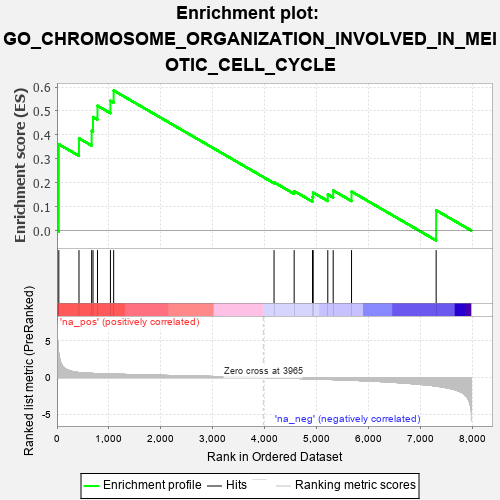
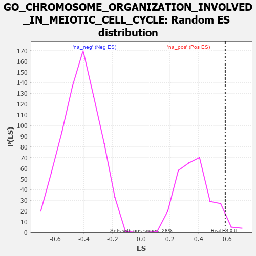

| | | Dataset | 7d |
| Phenotype | NoPhenotypeAvailable |
| Upregulated in class | na_pos |
| GeneSet | GO_CHROMOSOME_ORGANIZATION_INVOLVED_IN_MEIOTIC_CELL_CYCLE |
| Enrichment Score (ES) | 0.58549505 |
| Normalized Enrichment Score (NES) | 1.5780284 |
| Nominal p-value | 0.035842296 |
| FDR q-value | 0.23660316 |
| FWER p-Value | 1.0 |
Table: GSEA Results Summary

Fig 1: Enrichment plot: GO_CHROMOSOME_ORGANIZATION_INVOLVED_IN_MEIOTIC_CELL_CYCLE
Profile of the Running ES Score & Positions of GeneSet Members on the Rank Ordered List
| PROBE | GENE SYMBOL | GENE_TITLE | RANK IN GENE LIST | RANK METRIC SCORE | RUNNING ES | CORE ENRICHMENT | | 1 | SPO11 | | | 35 | 3.371 | 0.3609 | Yes |
| 2 | MLH1 | | | 423 | 0.679 | 0.3857 | Yes |
| 3 | SMC2 | | | 667 | 0.570 | 0.4170 | Yes |
| 4 | MRE11 | | | 693 | 0.560 | 0.4745 | Yes |
| 5 | RAD21 | | | 779 | 0.538 | 0.5221 | Yes |
| 6 | REC8 | | | 1028 | 0.478 | 0.5427 | Yes |
| 7 | RAD51 | | | 1090 | 0.466 | 0.5855 | Yes |
| 8 | MSH4 | | | 4176 | -0.038 | 0.2019 | No |
| 9 | BAG6 | | | 4563 | -0.108 | 0.1651 | No |
| 10 | SMC4 | | | 4916 | -0.180 | 0.1404 | No |
| 11 | ATRX | | | 4929 | -0.184 | 0.1589 | No |
| 12 | ATM | | | 5210 | -0.249 | 0.1507 | No |
| 13 | RAD50 | | | 5314 | -0.276 | 0.1676 | No |
| 14 | MEIOB | | | 5667 | -0.366 | 0.1630 | No |
| 15 | SYCP1 | | | 7295 | -1.167 | 0.0850 | No |
Table: GSEA details [plain text format]

Fig 2: GO_CHROMOSOME_ORGANIZATION_INVOLVED_IN_MEIOTIC_CELL_CYCLE: Random ES distribution
Gene set null distribution of ES for GO_CHROMOSOME_ORGANIZATION_INVOLVED_IN_MEIOTIC_CELL_CYCLE